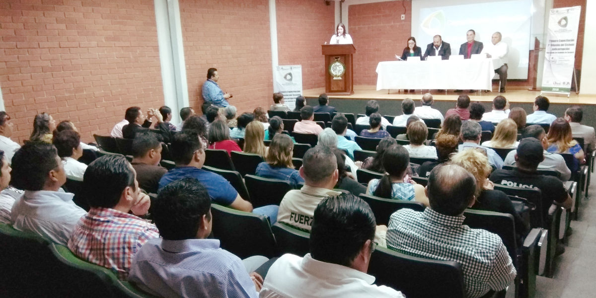
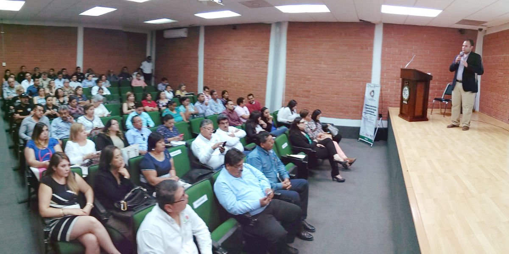
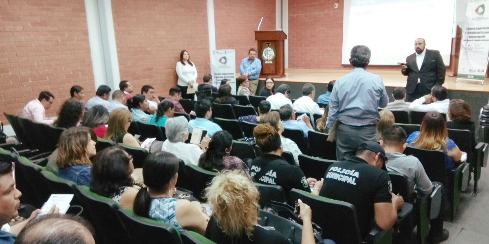

Servidores públicos de la región centro del Estado se capacitaron sobre temas relacionados con el Sistema Anticorrupción, durante un taller impartido en las instalaciones del Instituto Tecnológico Superior de Monclova
Monclova, Coahuila a 17 de Mayo de 2018.

El día jueves 17 de mayo del año en curso, se realizó en la Sala Audiovisual del Instituto Tecnológico Superior de Monclova la Capacitación y Difusión del Sistema Anticorrupción del Estado de Coahuila de Zaragoza, dirigido a las y los servidores públicos de la Región Centro del Estado.
En el evento se contó con la presencia del M. C. Manuel Gil Navarro, Presidente del Comité Coordinador del Sistema Anticorrupción del Estado de Coahuila de Zaragoza; de la M. C. Marcela Castañeda Agüero, Secretaria Técnica de la Secretaría Ejecutiva; del Lic. Marco Antonio Martínez Valero, Magistrado de la Sala Especializada en Materia de Responsabilidades Administrativas del Tribunal de Justicia Administrativa y del Ing. Raúl Sergio Farías Martínez, Director General del Instituto Tecnológico Superior de Monclova.
También asistieron las Consejeras y Consejeros del Consejo de Participación Ciudadana, la M. C. Ana Yuri Solís Gaona, la Lic. Lourdes de Koster López y el Lic. Carlos Rangel Orona.
Además se contó con la participación de servidores públicos de los municipios de: Candela, Castaños, Cuatrociénegas, Escobedo, Lamadrid, Monclova, Nadadores, Ocampo, Progreso, Sacramento, San Buenaventura y Sierra Mojada.
También asistieron titulares de las Coordinaciones Regionales de las Secretarías de: Cultura, Inclusión y Desarrollo Social, Infraestructura y Transporte, del Trabajo y de la Secretaría de Desarrollo Rural.

Los expositores que impartieron la Capacitación fueron:
- La M. C. Guadalupe Hernández Bonilla, Titular de la Unidad de Derechos Humanos e Igualdad de Género del Poder Judicial del Estado, con el tema “Anticorrupción, Derechos Humanos y Equidad De Género”.
- El M. C. Juan Carlos Cisneros Ruiz, Titular de la Unidad Anticorrupción del Tribunal de Justicia Administrativa con el tema “Ley General de Responsabilidades Administrativas”.
- El Lic. Luis Edgar Martínez Cruz, Director de Asuntos Jurídicos de la Auditoría Superior Del Estado, con el tema “Ley de Rendición de Cuentas y Fiscalización Superior del Estado de Coahuila de Zaragoza”.
- El Lic. Gerardo Alfonso Zavala De La Peña, Agente Del Ministerio Público de la Fiscalía Especializada en Delitos por Hechos de Corrupción del Estado, con los temas “Nueva Tipificación de Delitos por Hechos de Corrupción y sus Sanciones” e “Información sobre Cultura de Denuncia por parte de las y los Servidores Públicos”.
- El Lic. Reynaldo Rosas Cepeda, Director de Protección de Datos Personales del Instituto Coahuilense de Acceso a la Información Pública, con el tema “Cultura de la Legalidad y la Transparencia”.

17 mayo 2018